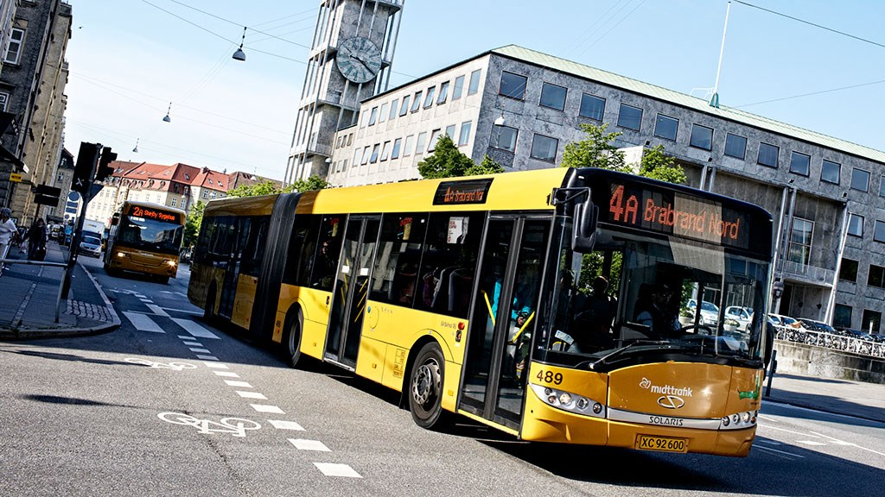

Offentlig Transport i Kørestol
Billede: (visitaarhus, 2019)
Ramt af handicap
En rundspørge af UlykkesPatientForeningen og PolioForeningen medlemmer fremgår det at halvdelen har problemer med den offentlige transport, på grund af manglende tilgængelighed. Formand Janus Tarp forklarer, hvordan man som handikappet kan følge sig dobbelt ramt. Man er for det første begrænset af sit handicap og dernæst er man begrænset i at benytte offentlige transport, på grund af sit handicap. ”Det gør, at nogle mennesker bliver afskåret i deres almindelige deltagelse i ting, som andre føler helt naturligt,” siger Janus Tarp.
Utilgængelighed i offentlig transport for kørestole
Mange handicappet oplever problemer for at komme rundt i byen, med den offentlige transport. Der mangels tilgængelighed i busserne og i togende, for der er mange unødvendige udfordringer for kørestolebrugerne og de gangbesværede. I Danmark kan man tage barnevogne, klapvogne, rollatorer og cykler med i den offentlige transport, men for kørestole er det ikke sådan. (Kim, 2017)
Susanne kan ikke få sit barnebarn med i bussen
For Susanne Pørlov og sit barnebarn, kan det i hvert fald være noget af en udflugt. Hendes barnebarn, som bruger en el kørestol, kommer ofte og besøger hende i Brønshøj. Susanne vil gerne give hende nogle gode oplevelser, men det følger hun sig afskåret fra, da det er ret svært at få en kørestol på bussen alene. Susanne skal gå 4 km for at komme til Nørrebro Station, hvor de så skal bestille hjælp til en slidske og skifte tog for at komme ind til byen. Susanne forklarer at både linje 5C, 2A og S-toget 350S køre fra Brønshøj. (Susanne, 2018) ”Jeg ved godt, at der er særlig bustrafik for handicappede, men bør offentlige busser ikke være for alle?”. Slutter Susanne og mener at det kan gøres bedre.
Fremtiden for tilgængelig bustrafik
EU kommer med nogle retningslinjer og standarter, som vi i Danmark også er nødt til at følge. Så der kommer til at ske noget på området med tiden. Men der er lange udsigter, fordi meget af busdriften er bundet op på kontrakter, som strækker sig langt ud i fremtiden. Men Janus Tarp har gode forhåbninger for at det bliver muligt at sikre tilstrækkelig adgang til busserne. Man har erfaringer andre steder i verden, som for eksempel storbyen New York, hvor chaufføren kommer og hjælper en ind ellers skydes der en rampe ud. Det kunne vi lære noget af mener Janus Tarp.
Kilder
Kim, R., 2017. Handicappede døjer med adgangen til tog og busser. [online] Altinget: transport. Available at:
https://www.altinget.dk/transport/ artikel/handicappede-doejer-med-adgangen-til-tog-og-busser
[Accessed 20 Oct. 2019].
Susanne, P., 2018. Blog: Hvor tit ser du en kørestol i bussen? [online] Passagerpulsen. Available at:
https://passagerpulsen.taenk.dk/bliv-klogere/blog-hvor-tit-ser-du-en-koerestol-i-bussen
[Accessed 20 Oct. 2019].
visitaarhus, 2019. Aarhus Rutebilstation. [online] visitaarhus.dk. Available at:
https://www.visitaarhus.dk/aarhus/plan-your-trip/aarhus-bus-station-gdk725406
[Accessed 28 Oct. 2019].